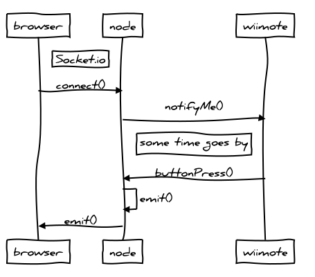
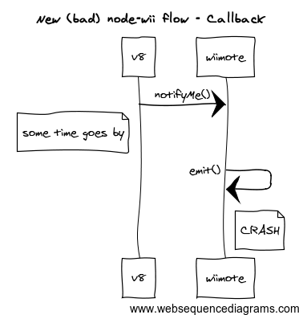

Node.js + Wiimote = Fun
How to write a custom Node.js addon that interfaces with a Nintendo Wii Remote
Andrew Brampton
October 4th, 2013
NationJS
Andrew Brampton
October 4th, 2013
NationJS

<script src="/socket.io/socket.io.js"></script>
var socket = io.connect();
socket.on( 'button', function( data ) {
console.log('button was pressed ', data);
});
var wii = require('nodewii')
, express = require('express')
, app = express()
, http = require('http')
, server = http.createServer(app)
, io = require('socket.io').listen(server);
var wiimote = new wii.WiiMote();
wiimote.connect( '00:00:00:00:00:00', function( err ) {
console.log('connected');
wiimote.on( 'button', function( data ) {
io.sockets.emit('button', data);
});
});
{
"targets": [
{
"target_name": "nodewii",
"sources": [ "src/base.cc", "src/wiimote.cc" ],
"libraries": [ "-lcwiid", "-lbluetooth" ]
}
]
}
$ node-gyp configure
$ node-gyp build
var wii = require('/build/nodewii.node')
#include <node.h>
#include <v8.h>
#include "../include/wiimote.h"
void init(Handle<v8::Object> target) {
WiiMote::Initialize(target);
}
NODE_MODULE(nodewii, init);
void WiiMote::Initialize (Handle<v8::Object> target) {
HandleScope scope;
Local<FunctionTemplate> t = FunctionTemplate::New(WiiMote::New);
constructor = Persistent<FunctionTemplate>::New(t);
constructor->SetClassName(String::NewSymbol("WiiMote"));
NODE_SET_PROTOTYPE_METHOD(constructor, "connect", Connect);
NODE_SET_PROTOTYPE_METHOD(constructor, "disconnect", Disconnect);
NODE_DEFINE_CONSTANT_NAME(target, "BTN_A", CWIID_BTN_A);
NODE_DEFINE_CONSTANT_NAME(target, "BTN_B", CWIID_BTN_B);
target->Set(String::NewSymbol("WiiMote"), constructor->GetFunction());
}
Local<FunctionTemplate> t = FunctionTemplate::New(WiiMote::New);
constructor = Persistent<FunctionTemplate>::New(t);
constructor->SetClassName(String::NewSymbol("WiiMote"));
target->Set(String::NewSymbol("WiiMote"), constructor->GetFunction());
module.WiiMote = function WiiMote() {
// calls C++ WiiMote::New()
}
NODE_SET_PROTOTYPE_METHOD(constructor, "connect", Connect); NODE_SET_PROTOTYPE_METHOD(constructor, "disconnect", Disconnect); NODE_DEFINE_CONSTANT_NAME(target, "BTN_A", CWIID_BTN_A); NODE_DEFINE_CONSTANT_NAME(target, "BTN_B", CWIID_BTN_B);
module.WiiMote.connect = Connect; // Calls C++ Connect(...) module.WiiMote.disconnect = Disconnect; // Calls C++ Disconnect(...) module.BTN_A = 0x0008; //CWIID_BTN_A; module.BTN_B = 0x0004; //CWIID_BTN_B;
wiimote.connect( '00:00:00:00:00:00', function( err ) {
console.log('wiimote connected');
});
Handle<Value> WiiMote::Connect(const Arguments& args) {
HandleScope scope;
if(args.Length() == 0 || !args[0]->IsString()) {
return ThrowException(Exception::Error(
String::New("MAC address is required and must be a String."))
);
}
if(args.Length() == 1 || !args[1]->IsFunction()) {
return ThrowException(Exception::Error(
String::New("Callback is required and must be a Function."))
);
}
String::Utf8Value mac(args[0]);
Local<Function> callback = Local<Function>::Cast(args[1]);
connect_request* ar = new connect_request();
ar->wiimote = wiimote;
str2ba(*mac, &ar->mac);
uv_work_t* req = new uv_work_t;
req->data = ar;
int r = uv_queue_work(uv_default_loop(), req,
UV_Connect, UV_AfterConnect);
if (r != 0) {
// Error handling
}
return Undefined();
}
void WiiMote::UV_Connect(uv_work_t* req) {
connect_request* ar = static_cast<connect_request* >(req->data);
ar->wiimote = cwiid_open(&ar->mac, CWIID_FLAG_MESG_IFC)
if(ar->wiimote) {
ar->err = 0;
} else {
ar->err = -1;
}
}
void WiiMote::UV_AfterConnect(uv_work_t* req, int status) {
HandleScope scope;
connect_request* ar = static_cast<connect_request* >(req->data);
WiiMote * wiimote = ar->wiimote;
if (ar->err == 0) {
// Setup the callback to receive events
cwiid_set_data(wiimote->wiimote, wiimote);
cwiid_set_mesg_callback(wiimote->wiimote, WiiMote::HandleMessages);
}
}
TryCatch try_catch;
Local<Value> argv[1] = { Integer::New(ar->err) };
ar->callback->Call(Context::GetCurrent()->Global(), 1, argv);
if(try_catch.HasCaught())
FatalException(try_catch);
ar->callback.Dispose();
delete ar;
